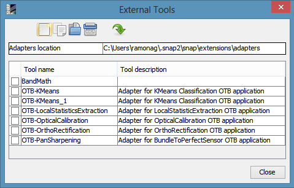

| Standalone Tool Adapter |
|
The interface consists in 3 screens which allow the following operations: create new adapter, edit, duplicate and delete an existing adapter, executing an adapter.
This form, having the title 'External Tools', lists all the currently defined adapters, with a bottom button band that contains actions for creating a new adapter, duplicating an existing adapter, editing, deleting and executing an adapter. On the top, one can set the location from where adapters are read by double-clicking the area from the right of the label "Adapters location". Below it, there is a list of the adapters where the user can select an adapter to execute one of the aforementioned actions.
This form can be invoked by using the menu Tools->Manage external tools of the SNAP application.
The form for creating a new adapter is reused for editing an existing adapter and for duplicating an adapter.
Go here to see details about editing an adapter.
When executing an already defined adapter, some actions are necessary in the execution form:
Note: the parameters sourceProduct and sourceProductFile will not be available in the execution form, since those are edited by actually selecting the source product(s)!